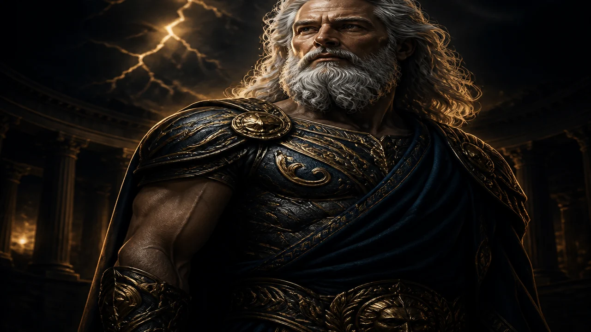
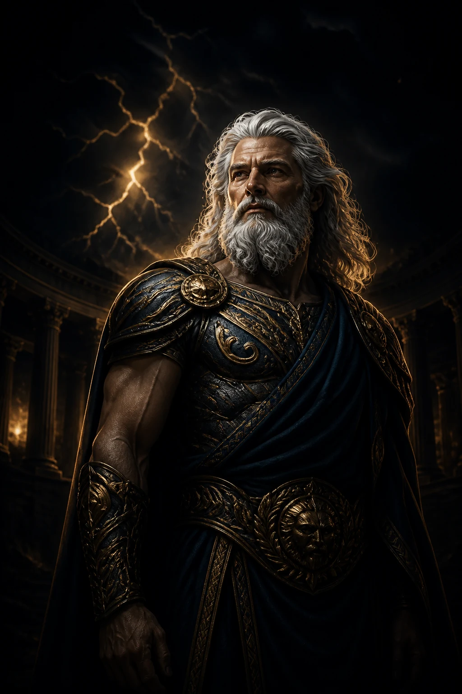
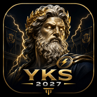
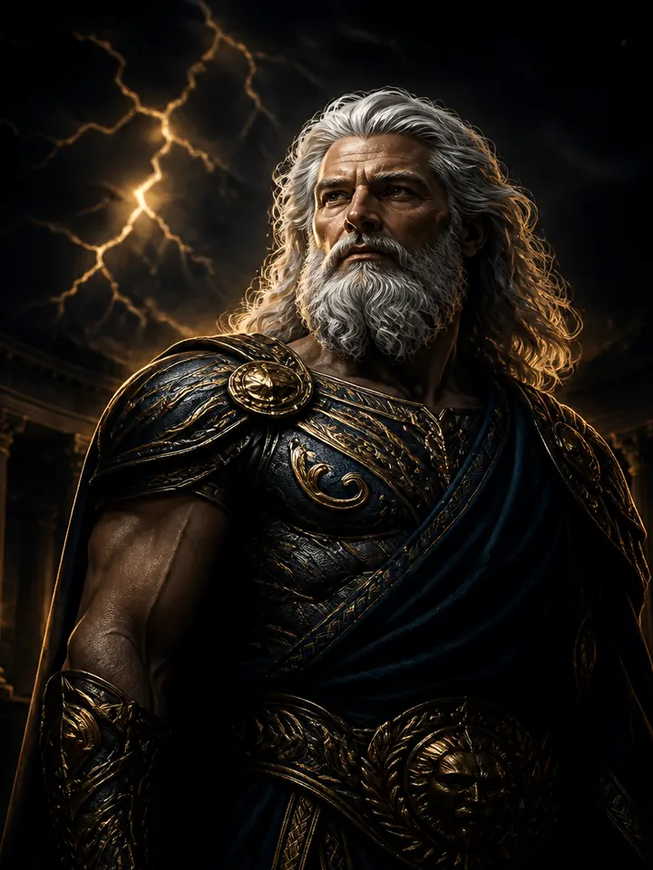

ZİRVEYE GİDEN YOL PLANLI ÇALIŞMADAN GEÇER
YKS 2027 ARENA
TYT ve AYT hazırlığını tek merkezden yönet.


TYT ve AYT hazırlığını Zeus Koçluğu, Dersler ve Sınav Arenası ile yönet.


TYT ve AYT hazırlığını tek merkezden yönet.
Günlük hedeflerin ve çalışma önerilerin.
Türkçe paragraf ve temel matematikte seri tekrar yap. AYT tarafında fonksiyon ve problem çözüm hızına odaklan.
YKS ders kapsamı, 12. sınıf ünite özetleri ve akıllı notlar.
Ünite özetleri MEB-TTKB ortaöğretim programları esas alınarak hazırlanmıştır; 2027 resmî YKS konu listesi yayımlandığında kapsam yeniden doğrulanacaktır.
Ücretsiz soru çöz, Premium deneme ve yazılı senaryolarını keşfet.
Her 10 sorudan sonra tam izlenen ödüllü reklamla devam edilir. Günlük ücretsiz sınır 50 sorudur.
Süreli TYT, AYT ve karma deneme oturumları.
Okul yazılılarına dönem ve sınav sırasına göre hazırlan.
Dengeli çalış, dinlenmeyi de planına kat.
Ücretsiz üyelikte günlük çalışma hedefi en fazla 50 soru. Premium üyelikte hedef sınırı yoktur.
İstersen seçtiğin günün soru hedefini diğer günlere dengeli biçimde dağıtırız.
İlerlemeni ücretsiz izle; OBP ve 2025 bölüm karşılaştırması Premium'da.
Karne notlarından tahmini OBP, 2025 taban puanlarıyla bölüm karşılaştırması ve veliye özel ilerleme özeti Premium üyelikte açılır.
Sınırsız kullanım, deneme ve yazılı senaryoları, OBP ve veli takibi tek üyelikte.
Premium üyelikte veli paneli eşleştirmesi için kısa süreli giriş kodu oluşturulur.
Davet kodun: Hazırlanıyor
Ücretsiz üyelikte hedef en fazla 50 sorudur. Premium üyelikte üst sınır kaldırılır.
50 soru veya 6 tamamlanmış ödüllü reklamdan sonra erişim ertesi gün Türkiye saatiyle 08.00’e kadar kilitlenir.
Android 10 veya üzeri
Güncel Google Chrome önerilir
En az 2 GB RAM önerilir
İlk kurulum ve güncellemeler için internet bağlantısı gerekir
Çalışma programınız seçtiğiniz şartlara göre oluşturuluyor. Emin misiniz?
OBP katkını ve 2025 resmî taban puanlarına göre bölüm karşılaştırmanı görmek için Premium üyeliğe geçebilirsin.
Karşılaştırma tahminidir; kesin yerleşme garantisi vermez.Ödüllü reklamı tamamen izle veya Premium üyeliğe geç.